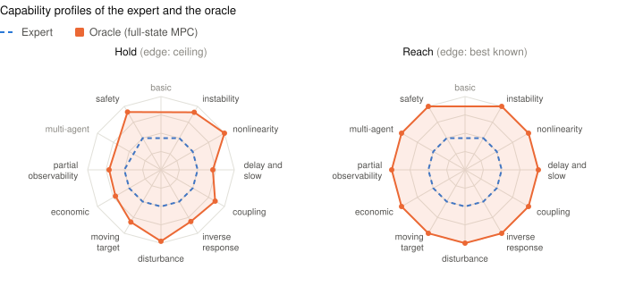

Capability profile¶
One score per task says how a policy compares with the expert. A profile says where it is strong and where it is weak: every task is tagged with the difficulties it poses (an unstable plant, a transport delay, a hidden state), and the policy's scores are averaged per difficulty and drawn as a radar, as in bsuite.
Run it¶
make_policy(name) returns a fresh policy(obs) for the task name. Here
the expert stands in for your policy:
import target_gym as tg
from target_gym.suite import plot_profile, references, run_suite
out = run_suite(
lambda name: tg.make_expert(name).host(), seeds=2, tasks=["first_order", "cstr"]
)
out["tasks"]["cstr"]["transient_ratio"] # 1.0: the expert against itself
fig = plot_profile({**references(), "mine": out["profile"]})
fig.savefig("profile.png")
Leave out tasks to run all 24, and use 10 seeds for a result you report.
references() gives the expert and the oracle profiles from the recorded
results, so they cost nothing to draw.
Read the two radars¶
Each spoke is a capability, and its point is the mean over the tasks that probe it. These are the expert and the oracle, drawn from the recorded results and redrawn whenever they are re-recorded:

- The dashed ring at 0.5 is the expert. Outside it the policy is better than the shipped controller; inside it, worse.
- Hold scores tracking once the target is reached. The edge is the ceiling: every tracked quantity within its instrument's resolution. A point at 0.75 has covered half the distance from the expert to the ceiling, on the log scale of the holding score.
- Reach scores the moves: the approach from the reset and every target
change. Moves have no ceiling, so the edge is the best known, the oracle's
recorded ratio to the expert. So on Reach the oracle is the edge itself,
and what differs between tasks is how much room that edge stands for
(
oracle_transient_ratio). A policy that beats it is drawn on the edge, and its number in the table says by how much. - 0 at the centre is as far below the expert as the edge is above it.
- A grayed label means no task on that spoke leaves room. On Hold, an
expert that already holds within the resolution leaves none. On Reach, a
task counts only where the oracle reaches new targets at least 1.25 times
cheaper than the expert; closer than that, seed noise would decide the
point.
first_orderhas room on neither. - The oracle reads the full state, which the policy cannot. It shows what is reachable, not what is fair.
The numbers behind each point¶
out["tasks"][name] holds what target_gym.scoring.score_policy returns.
For the moves:
| Key | Meaning |
|---|---|
transient_ratio |
The expert's cost per move divided by the policy's, per seed: 3 means it reaches new targets 3 times cheaper. The cost is summed over the plant's fixed settle after each move. |
transient_ratio_ci, transient_win_rate |
Its 95% bootstrap interval and the share of seeds the policy wins. |
settling_ratio |
How many times sooner the policy settles: its tracking cost enters the band and stays there until the next move. The band is every tracked error at its floor, the cost the reward charges as 1 per term. |
expert_settling, policy_settling |
Those settling times, in steps per move. |
oracle_transient_ratio, oracle_settling_ratio |
The oracle's recorded ratios, the best known. NaN until the protocol records moves. |
ratio, win_rate and score are the verdict and the holding score of the
protocol.
Why each task has its tags¶
Each tag comes from the task's PHYSICS.md (line numbers in brackets).
| Task | Capabilities | From the physics |
|---|---|---|
first_order |
basic | No disturbance, nothing hidden, nothing stochastic (73, 90). |
cstr |
basic, nonlinearity | Arrhenius gain (68); nothing hidden (119). |
unstable_cstr |
instability, disturbance, safety | Held on its open-loop unstable middle steady state (5); the feed temperature drifts unmeasured (290); trips at 365 K, within 5 to 20 steps at full heating (279, 338). |
ph_neutralization |
nonlinearity, disturbance | The gain varies 45 times across the range (94); the buffer flow is unmeasured (97). |
four_tank |
coupling, inverse response | Non-minimum phase (51); negative relative gain, so the obvious pairing is unstable (52, 70). |
distillation |
coupling, delay and slow | Ill-conditioned, relative gain about 52 (4, 58); dominant time constant about 194 min (123). |
boiler_drum |
inverse response, coupling, safety, instability | Swell and shrink (119 to 124); fuel and feedwater act on level and pressure; trips at both level limits (128); the level is an integrator, a marginal case of instability (125). |
cement_kiln |
delay and slow, partial observability, nonlinearity | The suite's transport-delay problem (26); the axial profile is hidden (144); free lime is steeply temperature-sensitive. |
glass_furnace |
delay and slow, partial observability | A pure transport delay on fuel (153) and glass time constants of about 30 h; melt and regenerators are hidden (23 to 28). |
hvac |
delay and slow, economic, partial observability | A heavyweight building with hours of memory; comfort and gas priced in euros (216, 217); surface temperature and weather hidden (119). |
reactor |
delay and slow, partial observability, economic, moving target | Xenon is a multi-hour memory; most of the state is hidden (148); priced at the spot price (217); follows a drifting demand. |
compressor_surge |
safety, nonlinearity, disturbance | Trips below the surge line (9); the Moore-Greitzer cubic characteristic; the consumers' demand ramps. |
wind_turbine |
disturbance, economic, safety | The rotor-effective wind is hidden in turbulence (87); an imbalance price (198); trips on over- and under-speed (107). |
battery |
economic, moving target, safety | A priced running cost (92); a dispatch setpoint every 5 minutes; trips outside 5 to 95% charge (93). |
plane |
disturbance | The gusts are hidden, which is the point (180). |
plane_energy |
moving target, coupling | A ladder of altitudes with airspeed scored too, which removes the spare degree of freedom (193, 194). |
plane_sine |
moving target | A sinusoid, as a frequency probe (193). |
plane3d_heading |
coupling | Banking costs lift: altitude and heading share the controls. |
plane3d_circle |
moving target | A path. |
plane3d_racetrack |
moving target | A path. |
plane3d_figure8 |
moving target | A climbing and descending path. |
patrol |
moving target | The slot moves with a manoeuvring lead (8, 9). |
patrol_bearing_only |
moving target, partial observability | A bearing-only sensor (46): the lead's heading is not observed. |
formation |
multi-agent, moving target | Every aircraft is flown by the policy, on one team cost. |
Limits¶
- The Reach edge stands for different room on different tasks, from 1.25
times cheaper than the expert upwards.
oracle_transient_ratiogives it. - The fixed settle is 0 steps on
hvac, 1 onreactorand 4 onbattery, so their move cost covers a step or a few. Readsettling_ratiothere. - Multi-agent rests on one task and instability on two, so a single task moves those spokes.
- Every task counts the same on a spoke, however long its episode.